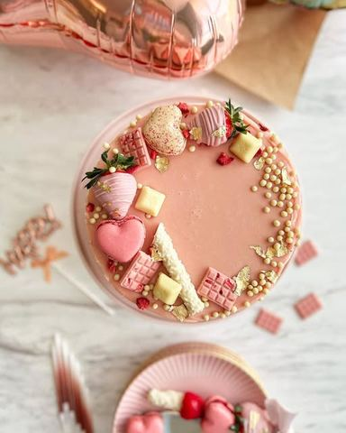

Moja beleška
SačuvanoSastojci
- Podloga
- Jagodica sloj
- Kremasti fil
- Preliv
Priprema
Koristila sam podesivi kalup, postavila sam ga na nekih 23 cm i sve sastojke za podlogu sam pomešala i ubacila u kalup, utapkala i odložila u frižider dok sam spremala jagodica sloj. Jagode sam isecakala sitnije i u šerpicu dodala vodu, šećere, malo limunovog soka. Želatin sam razmutila u 25 ml vode i ostavila sa strane dok su se jagodice krčkale na laganoj temperaturi, možda 10ak minuta kako bi ostale u parčićima. Sklonila sam šerpicu sa ringle i dodala želatin , pa umešala dok se ne otopi. Kada se potpuno prohladilo prelila sam preko podloge od plazme i ostavila opet na hladjenju. Posle nekih pola sata jagodica sloj se već dovoljno učvrstio i onda redjam sveže jagode sečene na pola oko okvira kalupa u krug. Potom sam umutila sireve sa šećerom u prahu, pa sam dodala i slatku pavlaku, umutila, a potom i otopljenu i prohlađenu belu čokoladu. Potrebno je da se ne muti predugo, kada se malo sjedini i poveze doda se i kremfix. Potrebno je pažljivo dodati u kalup beli fil, izmedju jagoda, pa je to najlakše uraditi uz pomoć dresir kese. Poravnati i ostaviti u frižider. Na kraju preko izlomljene bele cokolade sipati vrelu slatku pavlaku, lepo umešati i preliti preko torte. Posle par sati na hlađenju je spremna za dekoraciju i degustaciju 🤗🥰
Originalni opis sa Instagrama
Bela jagodica 🎂🍓🌸 Ovog puta kombinovala sam sveže jagode i belu čokoladu i tortica je nestala, a okupilo se samo nas nekoliko najbližih 😍 Ja bih rekla da to znači da ova tortica zaslužuje da se nadje i na vašem stolu za one najslađe događaje 🍓🍓🍓 Podloga: •400 gr mlevene plazme •120 ml mleka •125 gr otopljenog putera •100 gr belog krema ( beli deo eurokrema, bela Lino lada ili neki drugi kremić) Jagodica sloj: •400 gr očišćenih i iseckanih 🍓 •40 ml vode •1 zelatin + 25 ml vode •burbon vanila •1 vanilin šećer •50 gr belog šećera •malo limunovog soka (kašika) Kremasti fil: •250 gr marscapone sira •500 gr krem sira •100 gr šećera u prahu •250 ml slatke pavlake •200 gr bele čokolade •1 kremfix •250 gr jagoda sečenih na pola koje idu okolo torte Preliv: •200 gr bele cokolade •80 ml slatke pavlake Koristila sam podesivi kalup, postavila sam ga na nekih 23 cm i sve sastojke za podlogu sam pomešala i ubacila u kalup, utapkala i odložila u frižider dok sam spremala jagodica sloj. Jagode sam isecakala sitnije i u šerpicu dodala vodu, šećere, malo limunovog soka. Želatin sam razmutila u 25 ml vode i ostavila sa strane dok su se jagodice krčkale na laganoj temperaturi, možda 10ak minuta kako bi ostale u parčićima. Sklonila sam šerpicu sa ringle i dodala želatin , pa umešala dok se ne otopi. Kada se potpuno prohladilo prelila sam preko podloge od plazme i ostavila opet na hladjenju. Posle nekih pola sata jagodica sloj se već dovoljno učvrstio i onda redjam sveže jagode sečene na pola oko okvira kalupa u krug. Potom sam umutila sireve sa šećerom u prahu, pa sam dodala i slatku pavlaku, umutila, a potom i otopljenu i prohlađenu belu čokoladu. Potrebno je da se ne muti predugo, kada se malo sjedini i poveze doda se i kremfix. Potrebno je pažljivo dodati u kalup beli fil, izmedju jagoda, pa je to najlakše uraditi uz pomoć dresir kese. Poravnati i ostaviti u frižider. Na kraju preko izlomljene bele cokolade sipati vrelu slatku pavlaku, lepo umešati i preliti preko torte. Posle par sati na hlađenju je spremna za dekoraciju i degustaciju 🤗🥰 • #torta #nepecenatorta #tortasajagodama #domacatorta #slatkisi #slatkirecepti #girlycake #homamadecake #strawberrycake